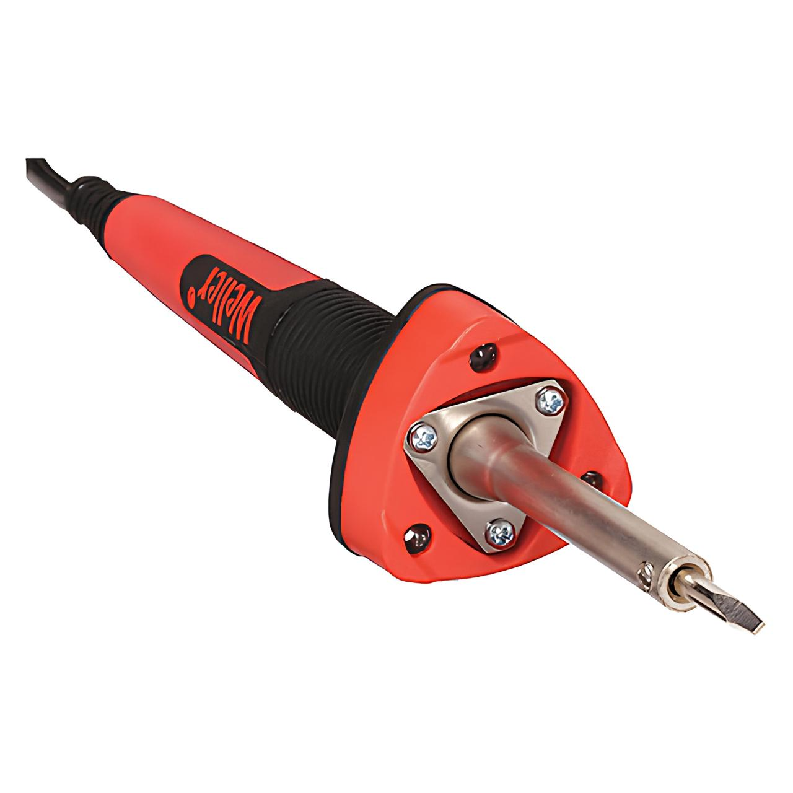
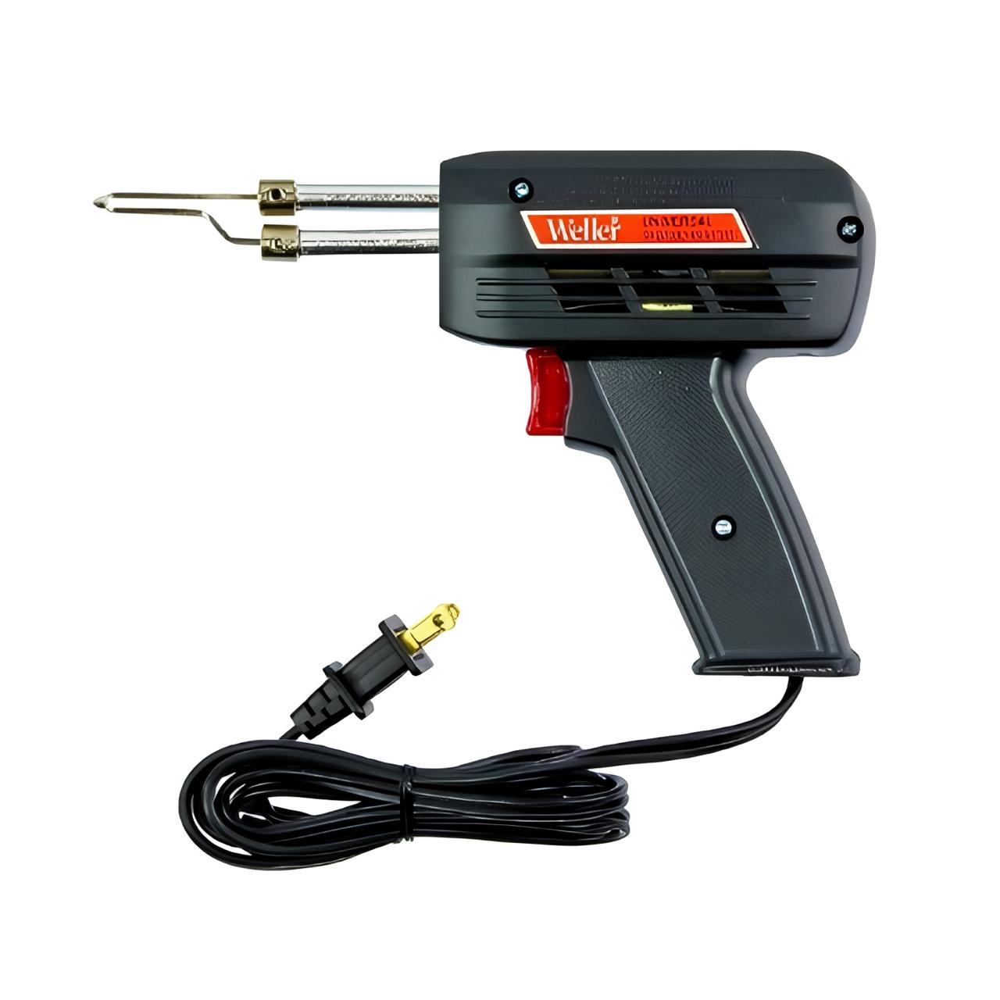
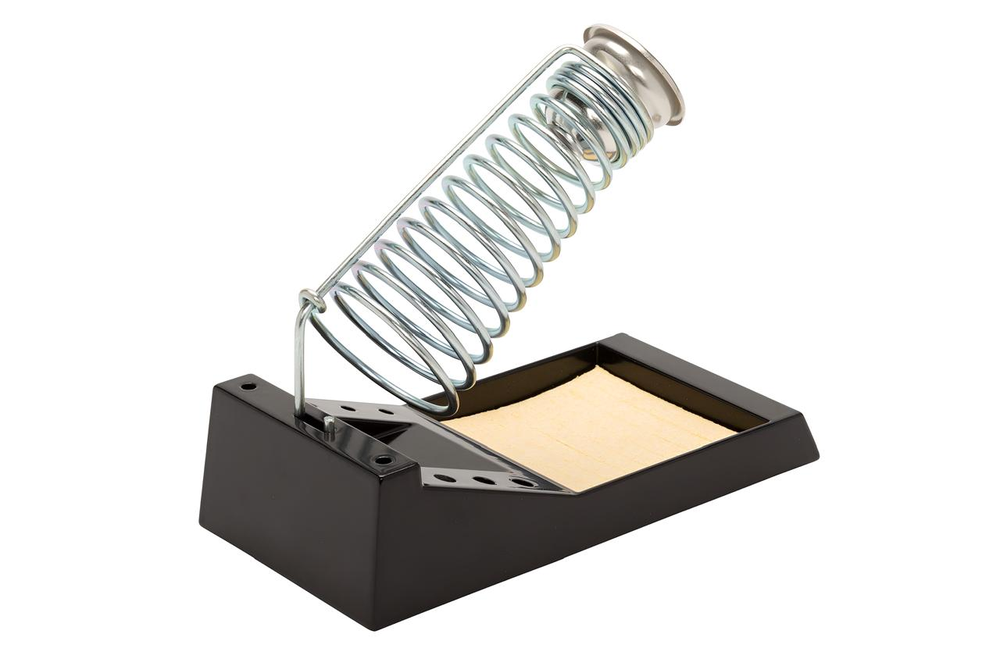
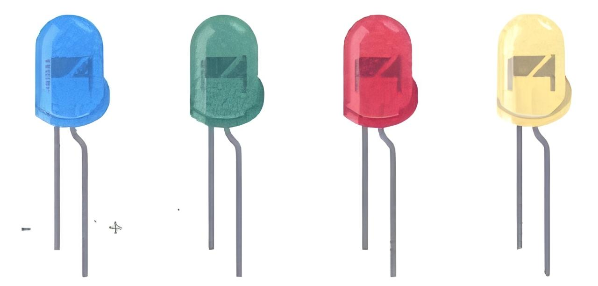
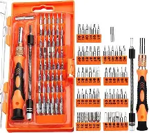
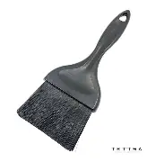
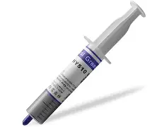

La Electricidad
La electricidad es un conjunto de fenómenos producidospor el movimiento e interaecion entre las cargas eléctricas positivas y negativas de los cuerpos físicos. La energia producida por las cargas eléctricas manifestarse dentro de cuatro ámbitos: físico, luminoso, mecánico y térmico.
Corriente Continua (CC o DC)
Se refiere al flujo continuo de carga eléctrica a través de un conductor entre dos puntos de distinto potencial. También se dice corriente continua cuando los electones se mueven siempre en el mismo sentido, el flujo va del polo positivo al negativo
Corriente alterna (CA o AC)
Es un tipo de corriente eléctrica que se caracteriza por cambiar a lo largo del tiempo ya sea en intensidad o en sentido, a intervalos regulares. Su característica principal es que, durante un instante de tiempo un polo es negativo y el otro positivo.
Circuito Electrico
Es la interconexión de dos o más componentes que contienen una trayectoria cerrada. Estos componentes pueden ser resistencias, fuentes interruptores, condensadores, semiconductores o cables.
Capacitadores o condensadores
Es un dispositivo capaz de almacenar energía en forma de campo eléctrico, a su vez, este componente se encuentra en grandes cantidades en los circuitos electricos, Existen dos tipos: Polarizados y No Polarizados.
Diodos
Son dispositivos semiconductores que permiten hacer fluir la electricidad únicamente e un sentido (Polarización directa), en otras palabras, si hacemos circlar corriente alterna a través de un diodo rectificador esta lo hára en la mitad de los semiciclos.
El Multimetro
Es un instrumento con él cual se puede realizar mediciones de voltaje, corriente y resistencia entre otras.
Soldador utilizado en Electrónica
Un soldador electrico o de estano, es una herramienta electrica usada para soldar. Funciona convirtiendo la energía electrica en calor, que a su vez provoca la fusión del material utilizado en la soldadura, como el estaño.
Tipos de soldadores
| Tipo | Concepto | Imagen |
|---|---|---|
| Soldador de lápiz | Es un clásico soldador con forma de lápiz de 30w. Su calentamiento es permanente y posee una alta inercia termica. |  |
| Soldador de pistola | Es un soldador en la que la punta se calienta por el efecto de una gran corriente que pasa por ella (el abultado mango lleva dentro un transformador que la produce). |  |
| Soportes | Son bases resistentes que necesita el soldador para mantener la punta caliente (a unos 250~300C), sobre esta base y dejarlo durante el tiempo que no se usa y así evitar quemar la mesa de trabajo. |  |
Soldadura
Es el proceso de unir las partes de manera que se toquen y se cubran con una gota de estaño fundido y Soldaduray una vez enfriada, formará una verdadera unión desde el punto de vista electrónico.
Estaño
Es una aleación de estaño con plomo, con una proporción respectiva del 60% y del 40%, que resulta ser la más indicada para las soldaduras en electrónica.
Pasos para soldar
- Verificar que la punta del cautin o soldador este limpia. En este proceso se puede usar un cepillo de alambres suaves o una esponja humedecida.
- Las piezas a soldar deben estar totalmente limpias y de ser posible pre-estañadas. Para esto se utilizará un limpia metales, lija muy fina, una lima pequeña, etc. dependiendo del tipo y tamaño del material que se vaya a soldar.
- Es importante utilizar un soldador con la potencia adecuada. En electronica, lo mejor es usar soldadores de 15 a 30w, nunca superiores, pues los componentes del circuito se pueden dañar sise les aplica un calor excesivo.
- Acercar el cautín a las partes a soldar, de forma que se calienten ambas partes y sin quitar el cautin aplicar el estano a la zona de la soldadura, evitando tocar directamente la punta.
Proceso para desoldar
Para desoldar hay varios metodos, en este libro se utilizará el método de succión de estaño.
Desoldador de vacío o chupón
Es una bomba de succion que consta de un cilindro que tiene en su interior un embolo accionado por un muelle. Tiene una punta de plástico, que soporta perfectamente las temperaturas utilizadas. El cuerpo principal (Depósito) suele ser de aluminio.
Pasos para dessoldar
- Cargar el desoldador presionando el pulsador de carga, venciendo la fuerza del muelle.
- Aplicar la punta del soldador en la zona dónde se quiere quitar el estaño. Si la punta del soldador está limpia, el estaño se derretirá en unos pocos segundos.
- 3. Asegurarse que el desoldador esté listo, en ese momento, sin retirar el soldador, acercar la punta del chupón a la zona y pulsar el botón de accionamiento. Se disparará el émbolo interno produciendo un gran vacío en la punta y absorbiendo el estaño hacia el depósito. Si es necesario, repetir este último paso, cargando previamente el desoldador.
LED´s (Ligth Emitting Diode)
Son diodos que al pasar la corriente emite la luz, se utilizan de forma decorativa y como iniciadores de proceso, consumen poca energía eléctrica. Tienen dos "patas" el ánodo (+) y el cátodo(-) por lo general, en los LED´s la pata más larga es el lado positivo (ánodo) y el lado plano es la pata negativa (cátodo).
¿Qué es el Mantenimiento de Computadoras?
El mantenimiento de computadoras es un proceso fundamental para garantizar el buen funcionamiento de los equipos tecnológicos. Incluye acciones preventivas y correctivas que permiten identificar, solucionar y evitar fallas técnicas.

Tipos de Mantenimiento
- Mantenimiento Preventivo: Limpieza del equipo, revisión de cables y ventilación.
- Mantenimiento Correctivo: Reparación o sustitución de piezas dañadas.
- Mantenimiento Predictivo: Monitoreo de parámetros para evitar fallas futuras.
Herramientas Utilizadas
| Herramienta | Uso Principal | Imagen |
|---|---|---|
| Destornillador de Precisión | Apertura de carcasas y fijación de piezas |  |
| Brocha Antiestática | Limpieza interna sin dañar componentes |  |
| Pasta Térmica | Mejorar la conducción del calor entre CPU y disipador |  |
Actividades Realizadas en Clases
- Desarme completo de un CPU para identificar componentes.
- Instalación de Windows 10 desde una memoria USB.
- Limpieza general del hardware (ventiladores, fuentes, placas madre).
Pasos básicos para el mantenimiento preventivo
- Apagar el equipo y desconectarlo de la corriente.
- Abrir la carcasa con cuidado y limpiar con aire comprimido.
- Verificar que no haya cables sueltos ni piezas dañadas.
- Limpiar ventiladores y disipadores de calor.
- Aplicar nueva pasta térmica si es necesario.
- Revisar el software: eliminar archivos basura, actualizar el sistema y el antivirus.
Recomendaciones importantes
- Realizar mantenimiento preventivo cada 3 a 6 meses.
- Evitar el sobrecalentamiento colocando el equipo en zonas ventiladas.
- No comer ni beber cerca del equipo.
- Usar reguladores de voltaje o UPS para evitar daños eléctricos.
Conclusión
Esta asignatura nos permite desarrollar habilidades técnicas que son esenciales para cualquier profesional en informática. Saber mantener y reparar computadoras es una base sólida para un futuro laboral exitoso.